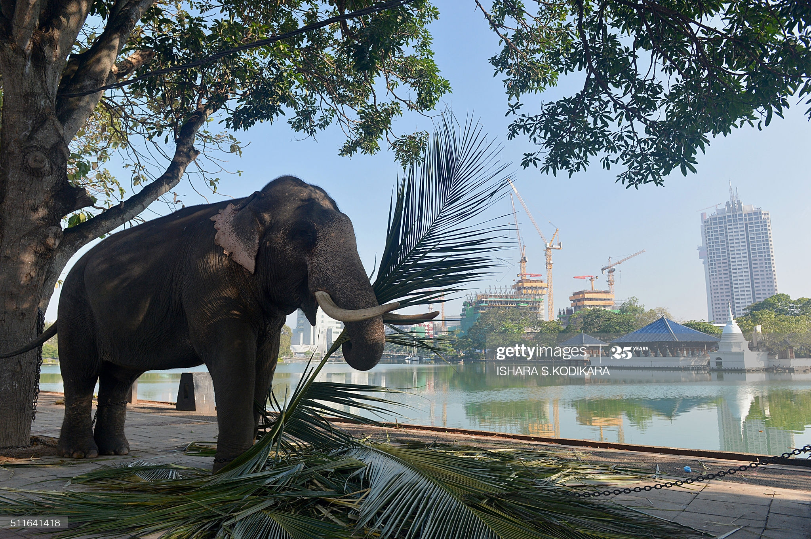

population has declined by at least 50% over the last three generations, estimated to be 60–75 years.
The Sri Lankan elephant population is now largely restricted to the dry zone in the north, east and southeast of Sri Lanka. Elephants are present in ,
Udawalawe National Park, Yala National Park, Lunugamvehera National Park, Wilpattu National Park and Minneriya National Park but also live outside protected areas. It is estimated that Sri Lanka has
the highest density of elephants in Asia. Human-elephant conflict is increasing dueto conversion of elephant habitat to settlements and permanent cultivation.
